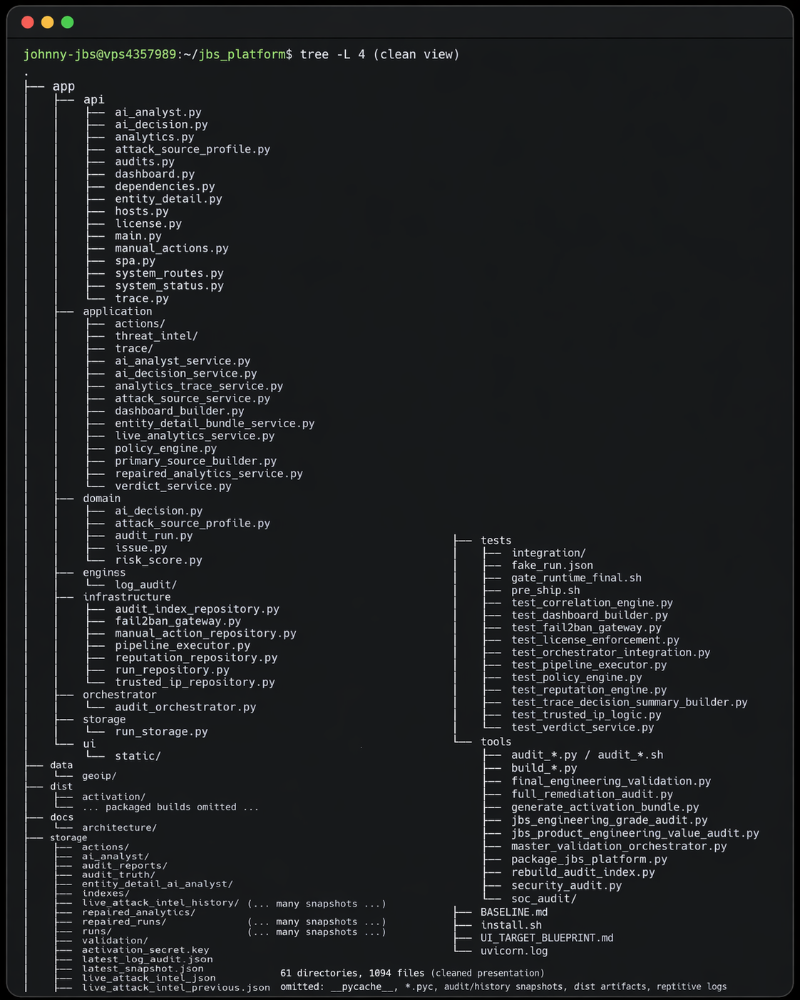

JBS Security Platform — Engineering Case Study
EN — Executive Summary
JBS Security Platform is a self-hosted security intelligence platform built around real Linux/VPS security evidence. It analyzes authentication activity, host audit data, firewall state, fail2ban state, runtime network activity, historical audit runs, repaired analytics snapshots and operator-reviewed manual actions.
The goal is to transform raw operational signals into auditable security intelligence: who is attacking, which IPs/ASNs/providers are recurring, what evidence supports a decision, and whether a signal comes from live runtime data or repaired historical analytics.
PL — Podsumowanie
JBS Security Platform to self-hosted platforma security intelligence zbudowana wokół realnych danych bezpieczeństwa z Linux/VPS. System analizuje aktywność logowania, dane audytu hosta, stan firewalla, fail2ban, aktywność sieciową runtime, historię audytów, repaired analytics snapshots oraz manualne akcje operatora.
Celem projektu jest zamiana surowych sygnałów operacyjnych w audytowalną informację bezpieczeństwa: kto atakuje, które IP/ASN/providery powtarzają się historycznie, jakie dowody stoją za decyzją i czy sygnał pochodzi z danych LIVE runtime czy z historycznej warstwy repaired analytics.
Core Capabilities / Główne funkcje
FastAPI backend Mini-SOC dashboard Live Attack Intel Repaired Truth Analytics GeoIP / ASN enrichment fail2ban / firewall context Trace investigation Manual action workflow AI Analyst / AI Decision Ollama / Llama-style local LLM Validation tooling Unit and integration testsValidation Snapshot / Walidacja
| Check | Result |
|---|---|
| Python compile check | PASS |
| JavaScript syntax check | PASS |
| FastAPI import | PASS |
| API smoke checks | PASS |
| Static index GET | PASS |
| Full pytest suite | 69 passed |
| Engineering-grade audit | 0 FAIL, 4 WARN |
| FastAPI route surface | 52 routes |
| Public-safe source snapshot | 205 files |
EN — Engineering Value
This project demonstrates backend engineering with Python and FastAPI, security-oriented data processing, deterministic pipeline design, real-world Linux/VPS operational context, API design, frontend/backend integration, modular refactoring discipline, automated testing, validation and audit tooling, operational thinking and secure sharing discipline.
PL — Wartość inżynierska
Projekt pokazuje backend engineering w Pythonie i FastAPI, przetwarzanie danych bezpieczeństwa, projektowanie deterministycznych pipeline’ów, realny kontekst Linux/VPS, projektowanie API, integrację frontendu z backendem, dyscyplinę refaktoryzacji, testy automatyczne, narzędzia walidacyjne i audytowe, myślenie operacyjne oraz bezpieczne podejście do udostępniania kodu.
Clean Project Tree / Czysta struktura projektu
Generated presentation image with noisy runtime files removed: __pycache__, *.pyc,
audit history snapshots, repetitive logs and generated artifacts.

Additional Files / Dodatkowe pliki
Full technical Markdown summary: README.md
Git engineering history: validation/git_engineering_history.md
Repository Status / Status repozytorium
The full source code is private. The current source HEAD has been cleaned so that private runtime artifacts, GeoIP databases, logs, audit runs, generated reports and secrets are not tracked.
Pełny kod źródłowy jest prywatny. Aktualny HEAD został oczyszczony z prywatnych artefaktów runtime, baz GeoIP, logów, historii audytów, wygenerowanych raportów i sekretów.